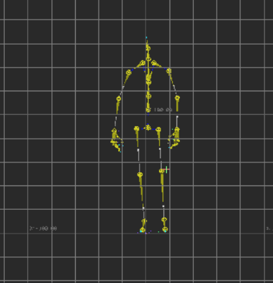
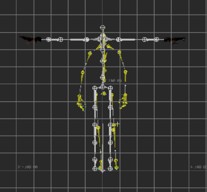
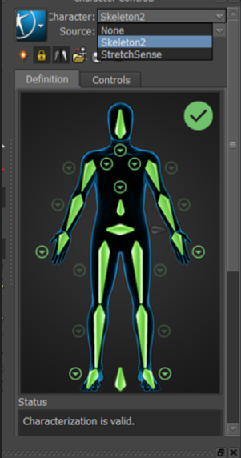
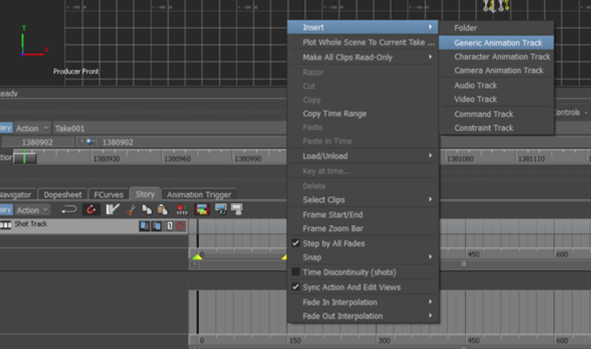
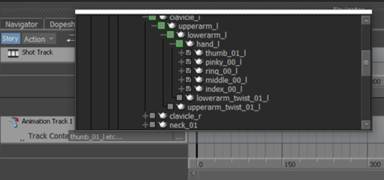
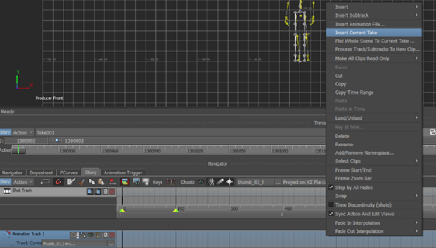
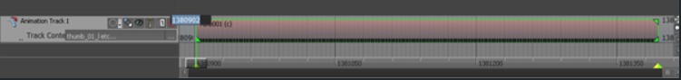
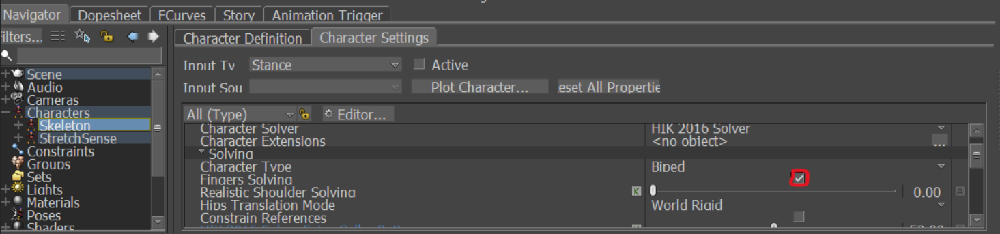
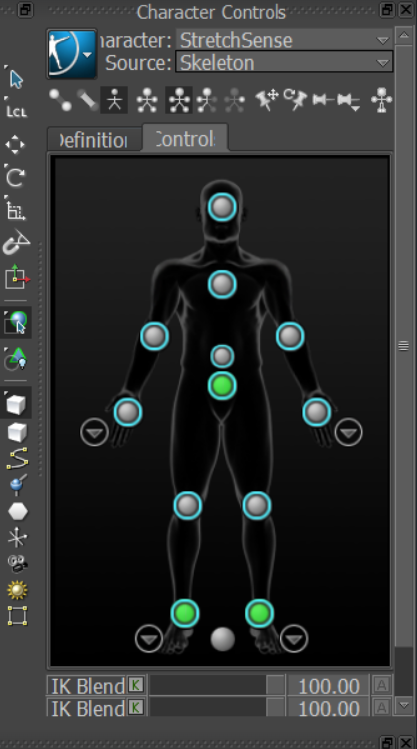
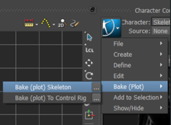

Requirements
MotionBuilder
Importing and setting up
- Create a new scene in MotionBuilder
- Import body animation FBX into the scene. T-Pose and setup the control rig of the skeleton

- Merge hand data on full body FBX into the scene. The Hand Engine asset already has a control rig associated with it.



Aligning hand and body animation
- If there is a difference in the hand and body data it can be edited to work by going to the story tab and adding a new generic animation track

- Press the three dots and select the finger bones (excluding the hand) of the hand animation asset

- Make sure that you are in the take that the hand animation is included on then right click on the animation track and select insert current take

- Press ‘A’ to focus on this data, then in the top left corner replace the current value (timecode) to 0 (assuming body data is keyed from frame 0.)

- Move back to the take with the body data.
Merging Hand and Body Data
- Go to the character settings created for the body data and uncheck the FingerSolving option

- In the character controls set the character as StretchSense and the source as the body animation character

- Bake the body animation onto the StretchSense rig

- Playback the animation and the StretchSense rig will now have both hand and body data animating on the one asset
- You can now retarget to any other Target asset from here using the baked animation.
- If the thumb rotation happens to be completely off, set the source to the StretchSense rig to drive your character so it follows one to one so the characterization matches.
Then select your character's fingers, go to Key Controls, and select the Plot Selected (All Properties) option.
Now you should be able to disable the StretchSense rig, the thumb will be fixed.